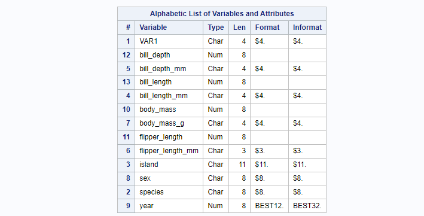
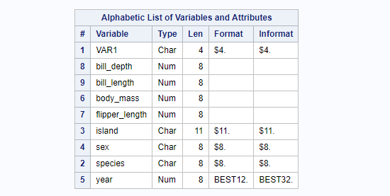
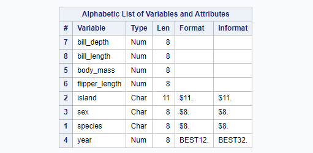
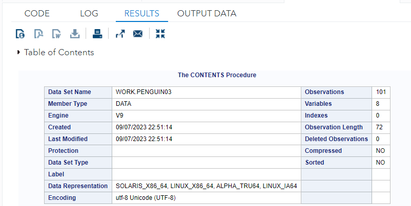
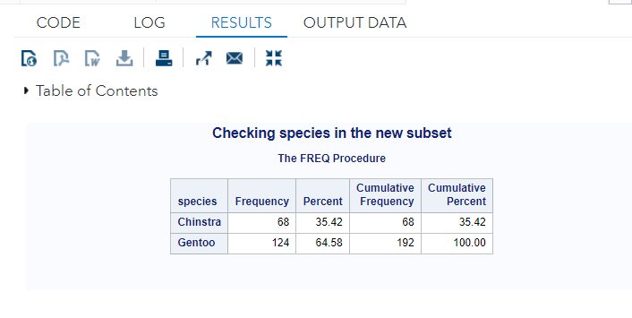
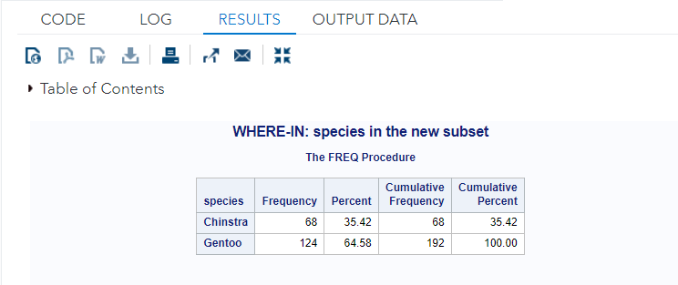
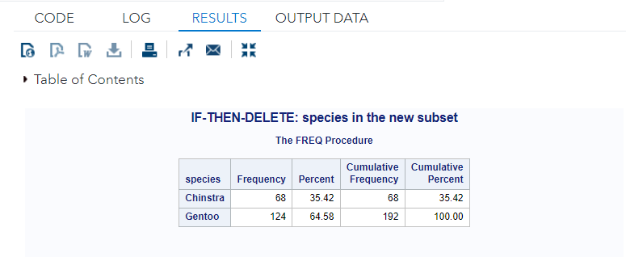
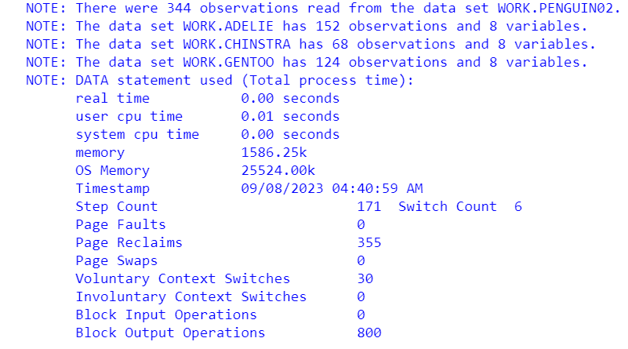

Chapter 8 Subsetting Data
Subsetting Data is a process of creating a smaller data set based on a larger data set. There are major methods for subsetting a data set: selecting and splitting.
Selecting: We select/keep rows and columns from a data set to make a smaller data set. We can also delete rows and drop columns to make a smaller data set.
Splitting: From the self-explanatory term, we can split a larger data set into several smaller data sets.
This chapter discusses the above different methods with some examples. We will still use the penguin data set in illustrative examples.
https://raw.githubusercontent.com/pengdsci/sta553/main/w02-penguins.csv
FILENAME pguin URL "https://raw.githubusercontent.com/pengdsci/sta553/main/w02-penguins.csv";
PROC IMPORT DATAFILE = pguin
OUT = penguin
DBMS = CSV
REPLACE;
GETNAMES = YES;
RUN;
DATA new_penguin; /* define a new data set */
SET Penguin; /* copy the data original data*/
body_mass = input(body_mass_g, 8.); /* conversion */
flipper_length = input(flipper_length_mm, 8.);
bill_depth = input(bill_depth_mm, 8.);
bill_length = input(bill_length_mm, 8.);
RUN;
8.1 Selecting Columns
This subsetting method is straightforward. SAS statements KEEP and DROP to define a smaller data set.
The new_penguin is defined based on the original penguin data set in which all numerical variables were defined in character form. We converted four character-encoded variables into numerical variables and added them to penguin with new names.
We now drop variables bill_depth_mm, bill_length_mm, body_mass_g, and flipper_length_mm from the data set new_penguin and only keep only numerical version of these variables.
DATA penguin01;
SET new_penguin;
DROP bill_depth_mm bill_length_mm body_mass_g flipper_length_mm;
RUN;
PROC CONTENTS DATA = penguin01;
RUN;
We can also use KEEP statement to subset the data set.
DATA penguin02;
SET new_penguin;
KEEP bill_depth
bill_length
body_mass
flipper_length
island
sex
species
year;
RUN;
PROC CONTENTS DATA = penguin02;
RUN;
8.2 Selecting Rows
Selecting columns is relatively straightforward. Working with rows is challenging since there are different ways of selecting rows under certain conditions.
8.2.1 Partial Reading
Sometimes file movements have a size limit. For example, the file size in an email attachment should not be bigger than, say 15MB. If you have a 25 MB data file, we can use OBS= to read part of the data file and create two smaller data files.
We have used OBS = and FIRSTOBS = in the previous chapter to read a data file with descriptions and comments.
For example, we now define a data set by including observations 100 - 200 in the penguin02.
DATA penguin03;
SET penguin02(FIRSTOBS = 100 OBS = 200);
RUN;
PROC CONTENTS DATA = penguin03;
RUN;
8.2.2 Conditional Selecting Methods
This type of method uses conditional statements to select rows. Three keywords WHERE, IF-THEN, and IN are used to define conditions for selecting rows.
8.2.2.1 WHERE and IN
We have used WHERE in the previous chapter on SAS graphics. For example, we create a subset that contains two of the three species: Chinstra and Gentoo.
DATA penguin04;
SET penguin02;
WHERE (species = 'Chinstra' OR species = 'Gentoo');
RUN;
PROC FREQ DATA = penguin04;
TABLE species;
TITLE "Checking species in the new subset";
RUN;
title ""
We can see that WHERE successfully subsets the data. We can also use IN statement to perform the same task.
DATA penguin04;
SET penguin02;
WHERE species IN ('Chinstra' 'Gentoo');
RUN;
PROC FREQ DATA = penguin04;
TABLE species;
TITLE " WHERE-IN: species in the new subset";
RUN;
title ""
8.2.2.2 IF-THEN-DELETE
We can also delete those rows that we don’t want to include in the final subset by using the statement IF-THEN-DELETE. We next create the above data set penguin05 by deleting species Adelie
DATA penguin05;
SET penguin02;
IF species = 'Adelie' THEN DELETE;
RUN;
PROC FREQ DATA = penguin05;
TABLE species;
TITLE " IF-THEN-DELETE: species in the new subset";
RUN;
title ""
8.3 Subsetting by Splitting
We can split a large data set into several small data sets by using the conditional statement IF-THEN-OUTPUT. This allows us to define several subsets in a single data step. The next example shows how the split penguin02 into three subsets and each subset contains only one species.
DATA Adelie Chinstra Gentoo;
SET penguin02;
IF species = 'Adelie' THEN OUTPUT Adelie;
IF species = 'Chinstra' THEN OUTPUT Chinstra;
IF species = 'Gentoo' THEN OUTPUT Gentoo;
RUN;
The above log file indicates that three subsets are successfully defined.
8.4 Learning Coding by Examples
This section provides numerous examples using different methods to subset data. One of the working data sets can be found at https://raw.githubusercontent.com/pengdsci/STA311/main/w07-us-counties.csv
The last example uses automatic variables to subset data.
/***************************************************************
Subsetting and Splitting Data Sets
Topics 1. Subsetting Datasets by Conditional Processing
2. Subsetting Datasets by Rows
3. Splitting a Dataset
4. Subsetting Variables
5. Subsetting Rows with Auto Variables
***************************************************************/
DM "CLEAR LOG";
DM "CLEAR OUT";
OPTIONS PS = 76 LS = 76 NONUMBER NODATE;
LIBNAME w07 "C:\STA311\w07";
/*************************************************
This session focuses on subsetting SAS data sets
using SAS keywords and SAS conditional statements.
Most of the examples will be based on the following
two working data sets.
**************************************************/
/***********************************/
/* Working data set #1 */
/***********************************/
DATA auto ;
LENGTH make $ 20 ;
INPUT make $ 1-17
price
mpg
rep78
hdroom
trunk
weight
length
turn
displ
gratio
foreign ;
DATALINES;
AMC Concord 4099 22 3 2.5 11 2930 186 40 121 3.58 0
AMC Pacer 4749 17 3 3.0 11 3350 173 40 258 2.53 0
AMC Spirit 3799 22 . 3.0 12 2640 168 35 121 3.08 0
Audi 5000 9690 17 5 3.0 15 2830 189 37 131 3.20 1
Audi Fox 6295 23 3 2.5 11 2070 174 36 97 3.70 1
BMW 320i 9735 25 4 2.5 12 2650 177 34 121 3.64 1
Buick Century 4816 20 3 4.5 16 3250 196 40 196 2.93 0
Buick Electra 7827 15 4 4.0 20 4080 222 43 350 2.41 0
Buick LeSabre 5788 18 3 4.0 21 3670 218 43 231 2.73 0
Buick Opel 4453 26 . 3.0 10 2230 170 34 304 2.87 0
Buick Regal 5189 20 3 2.0 16 3280 200 42 196 2.93 0
Buick Riviera 10372 16 3 3.5 17 3880 207 43 231 2.93 0
Buick Skylark 4082 19 3 3.5 13 3400 200 42 231 3.08 0
Cad. Deville 11385 14 3 4.0 20 4330 221 44 425 2.28 0
Cad. Eldorado 14500 14 2 3.5 16 3900 204 43 350 2.19 0
Cad. Seville 15906 21 3 3.0 13 4290 204 45 350 2.24 0
Chev. Chevette 3299 29 3 2.5 9 2110 163 34 231 2.93 0
Chev. Impala 5705 16 4 4.0 20 3690 212 43 250 2.56 0
Chev. Malibu 4504 22 3 3.5 17 3180 193 31 200 2.73 0
Chev. Monte Carlo 5104 22 2 2.0 16 3220 200 41 200 2.73 0
Chev. Monza 3667 24 2 2.0 7 2750 179 40 151 2.73 0
Chev. Nova 3955 19 3 3.5 13 3430 197 43 250 2.56 0
Datsun 200 6229 23 4 1.5 6 2370 170 35 119 3.89 1
Datsun 210 4589 35 5 2.0 8 2020 165 32 85 3.70 1
Datsun 510 5079 24 4 2.5 8 2280 170 34 119 3.54 1
Datsun 810 8129 21 4 2.5 8 2750 184 38 146 3.55 1
Dodge Colt 3984 30 5 2.0 8 2120 163 35 98 3.54 0
Dodge Diplomat 4010 18 2 4.0 17 3600 206 46 318 2.47 0
Dodge Magnum 5886 16 2 4.0 17 3600 206 46 318 2.47 0
Dodge St. Regis 6342 17 2 4.5 21 3740 220 46 225 2.94 0
Fiat Strada 4296 21 3 2.5 16 2130 161 36 105 3.37 1
Ford Fiesta 4389 28 4 1.5 9 1800 147 33 98 3.15 0
Ford Mustang 4187 21 3 2.0 10 2650 179 43 140 3.08 0
Honda Accord 5799 25 5 3.0 10 2240 172 36 107 3.05 1
Honda Civic 4499 28 4 2.5 5 1760 149 34 91 3.30 1
Linc. Continental 11497 12 3 3.5 22 4840 233 51 400 2.47 0
Linc. Mark V 13594 12 3 2.5 18 4720 230 48 400 2.47 0
Linc. Versailles 13466 14 3 3.5 15 3830 201 41 302 2.47 0
Mazda GLC 3995 30 4 3.5 11 1980 154 33 86 3.73 1
Merc. Bobcat 3829 22 4 3.0 9 2580 169 39 140 2.73 0
Merc. Cougar 5379 14 4 3.5 16 4060 221 48 302 2.75 0
Merc. Marquis 6165 15 3 3.5 23 3720 212 44 302 2.26 0
Merc. Monarch 4516 18 3 3.0 15 3370 198 41 250 2.43 0
Merc. XR-7 6303 14 4 3.0 16 4130 217 45 302 2.75 0
Merc. Zephyr 3291 20 3 3.5 17 2830 195 43 140 3.08 0
Olds 98 8814 21 4 4.0 20 4060 220 43 350 2.41 0
Olds Cutl Supr 5172 19 3 2.0 16 3310 198 42 231 2.93 0
Olds Cutlass 4733 19 3 4.5 16 3300 198 42 231 2.93 0
Olds Delta 88 4890 18 4 4.0 20 3690 218 42 231 2.73 0
Olds Omega 4181 19 3 4.5 14 3370 200 43 231 3.08 0
Olds Starfire 4195 24 1 2.0 10 2730 180 40 151 2.73 0
Olds Toronado 10371 16 3 3.5 17 4030 206 43 350 2.41 0
Peugeot 604 12990 14 . 3.5 14 3420 192 38 163 3.58 1
Plym. Arrow 4647 28 3 2.0 11 3260 170 37 156 3.05 0
Plym. Champ 4425 34 5 2.5 11 1800 157 37 86 2.97 0
Plym. Horizon 4482 25 3 4.0 17 2200 165 36 105 3.37 0
Plym. Sapporo 6486 26 . 1.5 8 2520 182 38 119 3.54 0
Plym. Volare 4060 18 2 5.0 16 3330 201 44 225 3.23 0
Pont. Catalina 5798 18 4 4.0 20 3700 214 42 231 2.73 0
Pont. Firebird 4934 18 1 1.5 7 3470 198 42 231 3.08 0
Pont. Grand Prix 5222 19 3 2.0 16 3210 201 45 231 2.93 0
Pont. Le Mans 4723 19 3 3.5 17 3200 199 40 231 2.93 0
Pont. Phoenix 4424 19 . 3.5 13 3420 203 43 231 3.08 0
Pont. Sunbird 4172 24 2 2.0 7 2690 179 41 151 2.73 0
Renault Le Car 3895 26 3 3.0 10 1830 142 34 79 3.72 1
Subaru 3798 35 5 2.5 11 2050 164 36 97 3.81 1
Toyota Celica 5899 18 5 2.5 14 2410 174 36 134 3.06 1
Toyota Corolla 3748 31 5 3.0 9 2200 165 35 97 3.21 1
Toyota Corona 5719 18 5 2.0 11 2670 175 36 134 3.05 1
Volvo 260 11995 17 5 2.5 14 3170 193 37 163 2.98 1
VW Dasher 7140 23 4 2.5 12 2160 172 36 97 3.74 1
VW Diesel 5397 41 5 3.0 15 2040 155 35 90 3.78 1
VW Rabbit 4697 25 4 3.0 15 1930 155 35 89 3.78 1
VW Scirocco 6850 25 4 2.0 16 1990 156 36 97 3.78 1
;
RUN;
PROC CONTENTS DATA=auto;
RUN;
/***********************************/
/* Working data set #2 */
/* NYT COVID-19 */
/***********************************/
PROC IMPORT OUT= WORK.us_county_covid19
DATAFILE= "C:\STA311\w07\w07-us-counties.csv"
DBMS=CSV REPLACE;
GETNAMES=YES;
GUESSINGROWS=3000; /* Caution: if omitted, the default is 20 */
DATAROW=2;
RUN;
PROC CONTENTS DATA = us_county_covid19;
RUN;
/**************************************************
Topic #1: Subsetting Datasets by Conditions
Conditional keywords:
1. IF
2. IF-THEN-DELETE
3. IF-THEN-OUTPUT
4. WHERE
***************************************************/
PROC CONTENTS DATA = auto;
RUN;
/* IF condition */
DATA FOREIN_CARS01;
SET AUTO; /* SAS data set */
IF FOREIGN =1; /* foreign = 1 (foreign), 0 (domestic) */
RUN;
/* IF-THEN-DELETE */
DATA FOREIGN_CARS02;
SET AUTO;
IF FOREIGN = 0 THEN DELETE; /* deleting domestic cars */
RUN;
/* IF-THEN-OUTPUT */
DATA FOREIGN_CARS03;
SET AUTO;
IF FOREIGN =1 THEN OUTPUT;
RUN;
/* WHERE */
DATA FOREIGN_CARS04;
SET AUTO;
WHERE FOREIGN = 1;
RUN;
/* IF statement can also be used in the data input step after
INPUT statement. However, WHERE can not be used
before the SAS data set is created, */
DATA FOREIGN_CARS05 ;
LENGTH make $ 20 ;
INPUT make $ 1-17 price mpg rep78 hdroom trunk weight length turn
displ gratio foreign ;
IF FOREIGN =1; /* WHERE does not work with INPUT statement */
DATALINES;
AMC Concord 4099 22 3 2.5 11 2930 186 40 121 3.58 0
AMC Pacer 4749 17 3 3.0 11 3350 173 40 258 2.53 0
AMC Spirit 3799 22 . 3.0 12 2640 168 35 121 3.08 0
Audi 5000 9690 17 5 3.0 15 2830 189 37 131 3.20 1
Audi Fox 6295 23 3 2.5 11 2070 174 36 97 3.70 1
BMW 320i 9735 25 4 2.5 12 2650 177 34 121 3.64 1
Buick Century 4816 20 3 4.5 16 3250 196 40 196 2.93 0
Buick Electra 7827 15 4 4.0 20 4080 222 43 350 2.41 0
Buick LeSabre 5788 18 3 4.0 21 3670 218 43 231 2.73 0
Buick Opel 4453 26 . 3.0 10 2230 170 34 304 2.87 0
Buick Regal 5189 20 3 2.0 16 3280 200 42 196 2.93 0
Buick Riviera 10372 16 3 3.5 17 3880 207 43 231 2.93 0
Buick Skylark 4082 19 3 3.5 13 3400 200 42 231 3.08 0
Cad. Deville 11385 14 3 4.0 20 4330 221 44 425 2.28 0
Cad. Eldorado 14500 14 2 3.5 16 3900 204 43 350 2.19 0
Cad. Seville 15906 21 3 3.0 13 4290 204 45 350 2.24 0
Chev. Chevette 3299 29 3 2.5 9 2110 163 34 231 2.93 0
Chev. Impala 5705 16 4 4.0 20 3690 212 43 250 2.56 0
Chev. Malibu 4504 22 3 3.5 17 3180 193 31 200 2.73 0
Chev. Monte Carlo 5104 22 2 2.0 16 3220 200 41 200 2.73 0
Chev. Monza 3667 24 2 2.0 7 2750 179 40 151 2.73 0
Chev. Nova 3955 19 3 3.5 13 3430 197 43 250 2.56 0
Datsun 200 6229 23 4 1.5 6 2370 170 35 119 3.89 1
Datsun 210 4589 35 5 2.0 8 2020 165 32 85 3.70 1
Datsun 510 5079 24 4 2.5 8 2280 170 34 119 3.54 1
Datsun 810 8129 21 4 2.5 8 2750 184 38 146 3.55 1
Dodge Colt 3984 30 5 2.0 8 2120 163 35 98 3.54 0
Dodge Diplomat 4010 18 2 4.0 17 3600 206 46 318 2.47 0
Dodge Magnum 5886 16 2 4.0 17 3600 206 46 318 2.47 0
Dodge St. Regis 6342 17 2 4.5 21 3740 220 46 225 2.94 0
Fiat Strada 4296 21 3 2.5 16 2130 161 36 105 3.37 1
Ford Fiesta 4389 28 4 1.5 9 1800 147 33 98 3.15 0
Ford Mustang 4187 21 3 2.0 10 2650 179 43 140 3.08 0
Honda Accord 5799 25 5 3.0 10 2240 172 36 107 3.05 1
Honda Civic 4499 28 4 2.5 5 1760 149 34 91 3.30 1
Linc. Continental 11497 12 3 3.5 22 4840 233 51 400 2.47 0
Linc. Mark V 13594 12 3 2.5 18 4720 230 48 400 2.47 0
Linc. Versailles 13466 14 3 3.5 15 3830 201 41 302 2.47 0
Mazda GLC 3995 30 4 3.5 11 1980 154 33 86 3.73 1
Merc. Bobcat 3829 22 4 3.0 9 2580 169 39 140 2.73 0
Merc. Cougar 5379 14 4 3.5 16 4060 221 48 302 2.75 0
Merc. Marquis 6165 15 3 3.5 23 3720 212 44 302 2.26 0
Merc. Monarch 4516 18 3 3.0 15 3370 198 41 250 2.43 0
Merc. XR-7 6303 14 4 3.0 16 4130 217 45 302 2.75 0
Merc. Zephyr 3291 20 3 3.5 17 2830 195 43 140 3.08 0
Olds 98 8814 21 4 4.0 20 4060 220 43 350 2.41 0
Olds Cutl Supr 5172 19 3 2.0 16 3310 198 42 231 2.93 0
Olds Cutlass 4733 19 3 4.5 16 3300 198 42 231 2.93 0
Olds Delta 88 4890 18 4 4.0 20 3690 218 42 231 2.73 0
Olds Omega 4181 19 3 4.5 14 3370 200 43 231 3.08 0
Olds Starfire 4195 24 1 2.0 10 2730 180 40 151 2.73 0
Olds Toronado 10371 16 3 3.5 17 4030 206 43 350 2.41 0
Peugeot 604 12990 14 . 3.5 14 3420 192 38 163 3.58 1
Plym. Arrow 4647 28 3 2.0 11 3260 170 37 156 3.05 0
Plym. Champ 4425 34 5 2.5 11 1800 157 37 86 2.97 0
Plym. Horizon 4482 25 3 4.0 17 2200 165 36 105 3.37 0
Plym. Sapporo 6486 26 . 1.5 8 2520 182 38 119 3.54 0
Plym. Volare 4060 18 2 5.0 16 3330 201 44 225 3.23 0
Pont. Catalina 5798 18 4 4.0 20 3700 214 42 231 2.73 0
Pont. Firebird 4934 18 1 1.5 7 3470 198 42 231 3.08 0
Pont. Grand Prix 5222 19 3 2.0 16 3210 201 45 231 2.93 0
Pont. Le Mans 4723 19 3 3.5 17 3200 199 40 231 2.93 0
Pont. Phoenix 4424 19 . 3.5 13 3420 203 43 231 3.08 0
Pont. Sunbird 4172 24 2 2.0 7 2690 179 41 151 2.73 0
Renault Le Car 3895 26 3 3.0 10 1830 142 34 79 3.72 1
Subaru 3798 35 5 2.5 11 2050 164 36 97 3.81 1
Toyota Celica 5899 18 5 2.5 14 2410 174 36 134 3.06 1
Toyota Corolla 3748 31 5 3.0 9 2200 165 35 97 3.21 1
Toyota Corona 5719 18 5 2.0 11 2670 175 36 134 3.05 1
Volvo 260 11995 17 5 2.5 14 3170 193 37 163 2.98 1
VW Dasher 7140 23 4 2.5 12 2160 172 36 97 3.74 1
VW Diesel 5397 41 5 3.0 15 2040 155 35 90 3.78 1
VW Rabbit 4697 25 4 3.0 15 1930 155 35 89 3.78 1
VW Scirocco 6850 25 4 2.0 16 1990 156 36 97 3.78 1
;
RUN;
/********************************************
Topic #2: Extracting Rows
This method is usually used in conjunction with
RPCO SORT and PROC FREQ. The following are a
few examples. I am going to create the same data
set: foreign_cars. We first create the SAS data
set AUTO.
*********************************************/
PROC SORT DATA = AUTO OUT = AUTO_SRT;
BY DESCENDING FOREIGN; /* default sorting order is ASCENDING */
RUN;
/** After sorting the data by FOREIGN in descending order,
Foreign cars are on the top few rows, We next find the number of
foreign cars before we use FIRSTOBS and OBS to extract the foreign cars **/
PROC FREQ DATA = AUTO_SRT;
TABLE FOREIGN;
RUN;
/** The frequency table shows there are 22 foreign cars in the data **/
DATA FOREIGN_CARS06;
SET AUTO_SRT(FIRSTOBS = 1 OBS = 22);
RUN;
/********************************************
Topic #3: Subsetting Variables
-- KEEP and DROP statements
*********************************************/
/** Create new data with 3 variables by keeping the 3 variables **/
DATA FEW_VAR_AUTO_01;
SET AUTO;
KEEP make price mpg; /* keep only 3 variables */
RUN;
/** Create a new data with 3 variables by dropping the rest of the variables**/
DATA FEW_VAR_AUTO_02;
SET AUTO;
DROP rep78 hdroom trunk weight length turn
displ gratio foreign; /* keep only 3 variables */
RUN;
/*****************************************************
Topic 4: Splitting Data Sets (Splitting by rows)
"Splitting an SAS dataset" means to partition the big
data set into several sub-datasets. "Combining" the
partitioned datasets will get the original dataset.
The following statements can be used for this purpose:
1. IF-THEN-OUTPUT
2. SELECT-WHEN-OTHERWISE-OUTPUT-END
*****************************************************/
/** IF-THEN-OUTPUT **/
DATA Foreign Domestic;
SET AUTO;
IF FOREIGN = 1 THEN OUTPUT FOREIGN;
IF FOREIGN = 0 THEN OUTPUT Domestic;
RUN;
/* SELECT-WHEN-OTHERWISE-OUTPUT-END */
DATA FOREIGN_SELECT DOMESTIC_SELECT;
SET AUTO;
SELECT(FOREIGN);
WHEN(1) OUTPUT FOREIGN_SELECT;
OTHERWISE OUTPUT DOMESTIC_SELECT;
END;
RUN;
/* */
DATA FOREIGN_SELECT_01 DOMESTIC_SELECT_01;
SET AUTO;
SELECT(FOREIGN);
WHEN(1) OUTPUT FOREIGN_SELECT_01;
WHEN(0) OUTPUT DOMESTIC_SELECT_01;
END;
RUN;
/* Caution: CLAUSES within SELECT-END statement must exhaust all values
of the selected variable. That means you have to partition
the input dataset into at least two sub-datasets if the
SELECT-END statement is used.
The following data step DOES NOT work! */
DATA FOREIGN_SELECT_02;
SET AUTO;
SELECT(FOREIGN);
WHEN(1) OUTPUT FOREIGN_SELECT_02;
END;
RUN;
/** If you are interested in extract a small subset defined based on
a selected variable (we call this variable partition variable)
that has more than two categories, you can use clause OTHERWISE to
split the original data into two subsets. **/
PROC CONTENTS DATA = US_COUNTY_COVID19;
RUN;
/* Example: COVID-19 case count data: using SELECT-END statement
Goal: extract PA data */
/* Find the exact string of the values of variable STATE */
PROC FREQ DATA = US_COUNTY_COVID19;
TABLE STATE;
RUN;
/* Splitting: PA and OTHER_STATES */
DATA PA OTHER_STATES;
SET US_COUNTY_COVID19;;
SELECT (STATE);
WHEN ('Pennsylvania') OUTPUT PA;
OTHERWISE OUTPUT OTHER_STATES;
END;
RUN;
/** IN operator to select multiple values of a categorical variable **/
DATA PAneighbors;
SET US_COUNTY_COVID19;
IF STATE IN ('Pennsylvania' 'New Jersey' 'Ohio' 'New York' 'West Virginia'
'Maryland' 'Delaware');
RUN;
PROC FREQ DATA =PAneighbors;
TABLE STATE;
RUN;
/*****************************************************
Topic 5: Splitting Data Sets (Splitting by rows)
Using AUTOMATIC Variables:
*****************************************************/
PROC SORT DATA = PAneighbors;
BY STATE COUNTY DATE;
RUN;
DATA County_one_obs;
SET PAneighbors;
BY STATE COUNTY DATE;
IF LAST.COUNTY;
RUN;
PROC FREQ DATA = County_one_obs;
TABLE STATE;
RUN;
/**********************************************************************
Concluding Remark: This note covered most of the splitting/subsetting
methods using a data step. In the future, you will learn more advanced
methods such as PROC SQL for subsetting and splitting data sets.
************************************************************************/